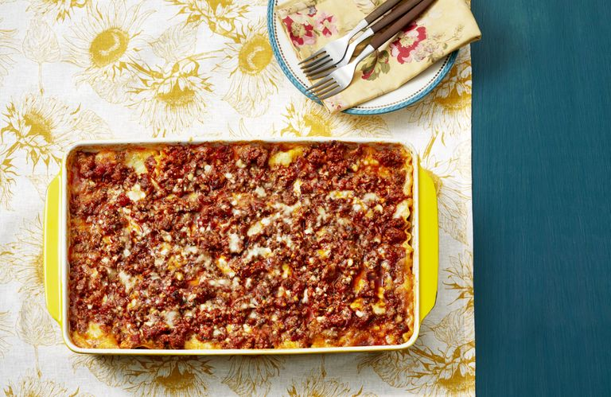

Home
Lasagna Recipe

How to make the best lasagna ever.
This recipe was borrowed from The Pioneer Woman's "Best Lasagna Recipe"
Ingredients List
- 1 1/2 lb. ground beef
- 1 lb. hot breakfast sausage
- 2 cloves garlic, minced
- 2 cans (14.5 ounce) whole tomatoes
- 2 cans (6 ounce) tomato paste
- 2 tbsp. dried parsley
- 2 tbsp. dried basil
- 1/2 tsp. salt
- 3 c. lowfat cottage cheese
- 2 whole beaten eggs
- 1/2 c. grated (not shredded) Parmesan cheese
- 2 tbsp. dried parsley
- 1 tbsp. olive oil
- 1 package (10 ounce) lasagna noodles
- 1 lb. sliced mozzarella cheese
Steps
- Bring a large pot of water to a boil.
- Meanwhile, in a large skillet or saucepan, combine ground beef, sausage, and garlic. Cook over medium-high heat until browned. Drain half the fat; less if you’re feeling naughty. Add tomatoes, tomato paste, 2 tablespoons parsley, basil and 1 teaspoon salt. After adding the tomatoes, the sauce mixture should simmer for 45 minutes while you are working on the other steps.
- In a medium bowl, mix cottage cheese, beaten eggs, grated Parmesan, 2 more tablespoons parsley, and 1 more teaspoon salt. Stir together well. Set aside. Add 1/2 teaspoon salt and the olive oil to the boiling water, then cook the lasagna noodles until “al dente” (not overly cooked). Drain.
- To assemble: Arrange 4 cooked lasagna noodles in the bottom of a baking pan, overlapping if necessary. Spoon half the cottage cheese mixture over the noodles. Spread evenly. Cover cottage cheese with a layer of mozzarella cheese. Spoon a little less than half the meat/sauce mixture over the top. Repeat, ending with meat/sauce mixture. Sprinkle top generously with extra Parmesan.
- Either freeze, refrigerate for up to two days, or bake immediately: 350-degree oven for 20 to 30 minutes, or until top is hot and bubbly.